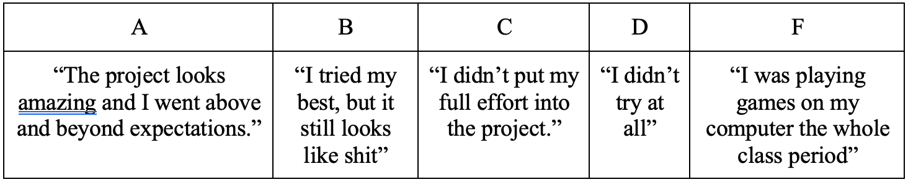

Context
The following writing sample will be featured in the collection, Made Not Only in Grades: Multimodal Assessment in the Social Justice Turn, with editors Gavin P. Johnson, Ashanka Kumari, and Shane A. Wood. My chapter has already been reviewed by the editors and accepted for publication and is currently in the process of a secondary review phase.
Multimodal Assessment and the Politics of Potential
It took me one semester to realize I loved teaching. By the end of the same semester, I decided that I also hated grading.
When I began teaching five years ago, I sat down with several wonderful mentors to discuss the realities of teaching in higher education. While they talked frankly about the demands of the role, none were able to truly prepare me for what assessment would feel like. I couldn’t have predicted the weight of it, of having 400 pages of student writing on my to-do list. I couldn’t have expected the literal dread that would fill my body as I tried to decipher what was an “A” versus a “B”, while knowing that the difference had genuine stakes for a student. And, in the age of AI, I had no concept for the burden of policing student writing for anything falsely generated. Any grade or feedback I gave students could be the motivation for them to improve in their writing, yes. But it could also be the difference between them getting a scholarship, acceptance to a graduate program, or retaining their current housing. That weight and guilt mixed with an even more complicated feeling; I care about my students and genuinely find their writing exciting. I want to witness their improvements, to be proud of their growth, to be surprised by them, to laugh out loud, cry, and think differently about the world through and with them. But even so, I dreaded due dates with fervor.
For a while, I didn’t interrogate this dislike. It served as a common language amongst other teachers. A colleague passing by in the hall murmuring, “I’ve got to go grade forty papers” became a moment of shared misery, like someone had said they had to take their pet to the emergency vet or their child had brough home norovirus from preschool. Oh my gosh, I’m so sorry, I’d say. Keep your head up. It’ll be over soon.
In my refusal to examine this dread, I made the mistake of equating all assessment with grading. I avoided professional development opportunities surrounding assessment in lieu of other topics. I avoided reading about assessment– it became a word that my eyes just skimmed over in texts. I rarely changed anything about my grading or assessment practices even though I knew it was a key part of my role as an instructor. Every semester I improved in my teaching, but this was an area I quickly grew stagnant. Despite my avoidance, I couldn’t shake the feeling that something was wrong. I knew I needed to be better for my students, especially as I sought to build classes centered around social justice topics and pedagogies. My avoidance of assessment, of course, was not just a personal issue, but a political one.
A breakthrough moment came while reading Stacey Waite’s Teaching Queer: Possibilities for Writing, Reading, and Knowing(2017), when Waite writes, “In reading student writing, I often take from Lad Tobin that ‘from the moment I started reading drafts for potential rather than for assessment, my relationship to my students and my sense of self as a writing teacher changed in fundamental and exhilarating ways;” (159). The word potential became something I couldn’t shake. What does it actually mean to read student work for potential? And could potential, in contrast to the quote above, become a part of equitable assessment rather than an alternative to it? The word potential can be broadly defined as the “possible as opposed to actual” or “having or showing the capacity to become or develop into something in the future”. To explore something through the lens of potential is to assess it not just as it is, but as it could be–as a moving and changing object, with moves and changes that are entirely attainable. In science, “potential” describes a fundamental property of matter: its capacity to have attributes that are only manifested or released under specific conditions. Potential energy, for example, is about the energy stored within an object or body, already there and waiting to be released. Assessment, through this lens, is something both generative and aspirational (Katz and Odell, 2012). It is not about some idealistic future goal that is wholly out of reach, but about striving towards something more, knowing that we are in range to meet it.
This lens of potential quickly became not just a way of escaping the fixed nature of certain grading strategies, but also a means of revising my overarching approach to assessment. Thus began my three-year process of coming to know assessment – not in the limiting ways I had initially thought of it, but as expansive and vital to equitable and ethical teaching. Using case studies of three courses I taught during the summers of 2022, 2023, and 2024, I explore my evolution of assessment through the lens of potential. I specifically explore how multimodal projects and multimodal assessment influenced the changes I have made broadly to my assessment practices. In this discussion, I draw on scholarship in Critical Disability Studies to contextualize how justice-oriented assessment practices are particularly necessary for cultivating potential. Throughout my discussion, I utilize the multimodal genres featured in my case studies as a way of exploring my evolution of assessment through the modes that began the evolution in the first place.
Positionality
The following video explores my current positionality as an early-stage scholar, and what "assessment" generally means to me. I utilized a multimodal format to emphasize the uniqueness of multimodal work and the insights it can provide
"Cripping" Assessment
In “Teaching is Accommodation,” Anne-Marie Womack (2017) frames accessibility as “the precondition to all learning”. Every aspect of teaching, assessment included, is predicated on the reality that for anyone to learn, they must first be able to access the space where learning is occurring, the materials mediating the learning, and the relationships and feedback mechanisms that enable them to participate and engage fully. Despite this reality, conversations surrounding disability and accommodations are often framed in terms of individual deficits on the part of the student. Brueggemann et al’s (2001) question comes to mind here: “Why is it that someone who learns to read in the fourth grade is a ‘slow learner’ and not just ‘someone who learned to read in the 4th grade’?” Ableist frameworks of learning are often ones of rehabilitation based on assessed failures; as teachers, we must reform the “slow learner.” We must speed them up, make them more like the “normal” students, get their writing on track with their peers. If we cannot do this, then that student will fail and/or be relegated to a different space. And it becomes all too easy to blame the student: they weren’t ready for college, they didn’t put enough effort in, they didn’t ask for enough help.
While Universal Design approaches to learning emphasize flexibility, communication, and adaptation, accommodations for students tend to be rigid, shallow attempts to “fix” what have been deemed as deficits. When encountering barriers for access, disabled individuals are then expected to justify removing those barriers, a violent burden that is rarely straightforward and seamless (Titchkosky, 2008). And even when disabled individuals can point to aspects of academic environments that are hindering their participation and they are believed – which is often not the case – they are then expected to guess what they might need (Dolmage, 2017). Disabled students, staff, and faculty often then must settle for less than what they actually need because their accommodations are deemed “too expensive” or “not necessary enough” (Price, 2024). If accessibility is the precondition to all learning, the most common approaches to it – minimal, cost-driven, and reactive – fails the majority of people in academia.
This sort of scarcity-driven approach to accessibility reflects broader institutional logics, ones that also frame how student learning is measured and reported. These narrowed definitions are built around racialized and ableist frameworks that systematically exclude students whose ways of knowing, expressing, or learning fall outside dominant norms. Disability justice movements have long studied and challenged these frameworks, and crip activists in particular have emphasized in contrast the contributions that disabled individuals and communities have on society. "Crip” is a term that has been reclaimed by its pejorative past, though it still serves as a way to make people “wince” and to jolt them out of their disability expectations (Kafer, 2013). To “crip” something invokes a lineage of self-identified crip activists – those smashing inaccessible curbs with hammers, chaining wheelchairs together to block busy intersections, and demanding better services and treatment for all people (McCruer, 2008). It is a term that invites friction, urges people to be unsettled, and demands more from disabled and able-bodied people. To theorize from a crip standpoint is to lead from the position of those excluded from the design and creation of a space, those whose “failure” to access it reveals not their own deficits, but the space’s own limitations.
So what would it mean to “crip” assessment? Neera Jain notes that a crip approach destabilizes assessment completely; it calls on educators to reconsider what exclusionary perspectives have shaped their discipline’s beliefs about learning, what ought to be assessed in the first place, and the methods of measurement themselves. A crip approach is not just about expanding understandings of quality, ability, and learning, but about going back to the source of their dominant definitions and breaking down their exclusionary beginnings (Jain, 2022). Cripping assessment, then, doesn’t begin with assessment at all, but with the very beginnings of a course: it’s learning goals, design, materials, and space. In the case studies and discussion in this chapter, I specifically explore how cripping assessment calls on educators to center their initial design and feedback in a way that prioritizes the potential of students. I consider how assessments shift if we were to begin every course, unit, and project with questions like: How and why do learners struggle to perform (or fail) on current assessments? How would these assessments shift if we assumed that these students - disabled or otherwise - could be successful learners? (Jain, 2022). If certain students’ tendencies to fail becomes a starting point to consider the flaws of assessment, then their potential to succeed and learn becomes an indicator for how to make those changes.
Towards New Modes of Assessment
Disabled students and educators have long pointed to multimodality as essential for building more accessible spaces of learning. While multimodality – in terms of materials, projects, and assessment methods – does not automatically make learning more accessible, the more modes a person has access to learn and create in, the more flexibility they have to accommodate their learning and creation styles (Brueggemann et al, 2001). Multimodal assessment also helps instructors shift away from traditional, static grading methods and moves them into commenting on works in more expansive ways, placing value and attention on aspects like creativity, technique, and the knowledges built from the interplay of different modalities (Wierszewski, 2013). Traditional methods of grading often work by “freezing” student writing and learning, creating a fixed value on what has been deemed a finished project (Hout, 2002). Multimodality has the potential to resist this limitation, both through the modes a student creates in and through the modes an instructor uses to assess the work.
Like the conversations of disability and accessibility above, multimodality is central to my evolution of assessment. When I first began teaching, I enjoyed the process of teaching multimodal projects, but found myself frustrated during the grading process. There were so many modes to take into consideration when providing feedback, not to mention that the interplay between modes also created even more rhetorical layers to assess. I found myself giving students A’s much more readily in these projects, partially because I didn’t know how to critically evaluate such different modes, but also because I was genuinely impressed with the work that students were turning in. Unlike traditional print essays, students were experts in many of the multimodal genres and mediums that they created in. How, I wondered, could I take off points, when the projects were better than I could create in that unfamiliar medium? But even asking that question began to bother me, my focus on justifying the “points” I was deducting rather than the feedback I could give to strengthen the work. This discomfort surrounding multimodal assessment became a turning point in my relationship to assessment broadly, as I was forced to reckon with the fact that 1) I had to completely reframe my understanding of assemmebr and 2) there is not some secret method that would “fix” my difficulties with assessing multimodal work. Rather, it was my limiting view of assessment in general that was the problem.
The evolution of my approaches to assessment were gradual and remain today a work in progress. Over the past few years, as I’ve tried (and sometimes failed!) to integrate new methods and justice-oriented frameworks, I’ve found value in reading accounts of educators putting their principles directly into practice. The case studies that follow contribute to that growing body of work. They center around multimodal projects that students conducted in a series of summer courses I taught in 2022, 2023, and 2024, in which I detail exactly what I changed and the results of those shifts. I conclude by discussing how my experiences shape my current approach to assessment in undergraduate courses, compiling broad shifts that have ultimately helped my build new frameworks of equitable assessment.
Case Studies
For the past five years, I have taught English courses each summer for high school students in the University of Kansas’ Upward Bound program. Upward Bound is a federally-funded program that provides support for low-income and first-generation high school students to increase the rates at which they attend and complete a higher education degree. In the 2024-2025 school year, Upward Bound funded over 1,000 programs across the U.S., reaching over 70,000 low-income, first-generation, and academically-at-risk high schoolers (Upward Bound, 2025). For students in the program, Upward Bound offers resources throughout the school year such as tutoring, counseling, mentoring, cultural enrichment activities, and economic opportunities. They also offer a summer program that allows students to earn a stipend while taking summer classes in English, Math, Science, and Language courses. These summer bridge classes are meant to both support the learning students will do in their remaining high school classes and help prepare them for collegiate level courses.
As an English teacher for Upward Bound, I have control over the content, topics, instruction, and assessment for the courses I teach, as long as I can justify how the class is growing students’ writing, reading, and communication skills. Because of this course design freedom, I tend to try out new activities, projects, course topics, and assessment methods during the summer. The following three courses were designed and taught by me for between twenty to thirty students each summer.
Summer 2022 - Zinemaking in the Composition Classroom
Zines are handmade, self-published booklets that circulate in small quantities throughout communities. Though most scholars trace their roots back to 1930s science fiction culture, zines quickly expanded to cover activism and politics, fan communities, teaching and learning, and self-reflection and representation (Duncombe, 1996). Because of their variability and lower cost to make and print, zines have also become a valuable tool for engaging students in the writing classroom and connecting their work more directly with public audiences. Their countercultural history also makes them a powerful multimodal genre for marginalized groups (Bold, 2005; Homna, 2016), and scholars have noted the benefits of specifically engaging youth in zinemaking (Poletti, 2005; Yang, 2010). Because the majority of my students were multiply-marginalized, I saw zines as an avenue for engaging them in developing multimodal composition skills while also exploring their interests, identities, and the issues they encounter in their daily lives.
In this course, students began by learning about the history of zinemaking and spent time observing and analyzing previously published zines. They then created two zines of their own. The first was a personal storytelling zine in which students created a booklet that showcased some aspect of their personality, interests, or identities. Students in my classes created zines on their favorite movies, books, and video games, on fashion, their zodiac signs, their families and pets, struggles they faced as teenagers, and their cultures. I printed copies of their zines so that they could trade with each other, give some to other teachers and peers, and share with their family and friends. After making their first zine, students reflected on the process, analyzing their rhetorical choices and assessing what worked well or could use improvements. They then used these reflections and my feedback to develop their second zine.
The second zine students made in the class asked them to combine storytelling and research to inform a chosen audience about a public issue of their choice. Students created zines on reproductive rights, gun violence, beauty standards, climate change, mental health, and more. The examples below showcase some of the covers of student zines.
One student, Anjalique, made the following zine about the Black Lives Matter movement and the pain and brutality of racism.
I had taught multimodal projects before, but nothing as comprehensive as the projects in this course. Students did complete other smaller projects in conjunction with the zines, but the majority of their efforts were centered around this multimodal work. And while I have been teaching long enough to know that students will often surprise me in wonderful ways, I could not have prepared myself for the incredible work students did for these projects. My amazement and excitement and awe at their work forced me to confront my assessment strategies. How, after all, could I reduce the important work students were doing here to a series of letter grades and post-design comments about their rhetorical choices? How could I possibly read works like Anjalique’s above and simply assign a letter grade to it?
So I didn’t! Instead, I formed my assessment of the multimodal projects around the labor students did. Inspired by Inoue’s labor-based grading contracts, I created a series of labor-focused questions that determined each student’s grade for the project. For each project, I asked:
Did the student complete a full 8-page zine with something on each page?
Did the student turn their zine on time or within a requested extension time?
Did the student work the entire workshop on their zines? If they did not, did they talk with me about why they could or could not work the whole time?
Did the student work without distracting classmates from their own projects?
If the answer was “yes” to these questions, students received full points, an “A” in the gradebook. If the answer was “no” to any of the questions, students dropped to a “B”, “C”, and so forth. Looking back, I would probably amend these questions to include more of the labor they did throughout the process (something like “Did the student implement all or the majority of feedback discussed in their one-on-one conference with me during the drafting stage?”), but for my first time switching to a labor-based system I kept it simple, and I don’t regret that. The questions above also don’t fully reflect the assessment work I was doing in class as students drafted their zines; I met with them each one-on-one multiple times and gave oral and written feedback throughout the design process. While there are always difficulties when changing assessment approaches, I also had immediate success. Many students even switched topics once they learned I was grading based on labor rather than the finished design, most switching from topics they had deemed “easier” or more likely to get them an A to ones that they actually wanted to try to make.
In addition to using a labor-based framework for assessment, I also assessed student progress throughout the course with daily journals and reflection essays. These reflection-based writings helped students assess their own work in addition to providing consistent avenues for me to evaluate their learning. Their first zine reflection, for example, asked students to identify their zine’s strengths and weaknesses, justify why they made the rhetorical choices they did, and talk about what they would change about their process going forward. These assignments, too, were graded based on labor and completion rather than on any aspects of writing mechanics.
Yes, most students ended with an A in the class. In fact, I don’t think there was a single student who received lower than an A on any of their zines. But I intentionally chose in this class to place value on the labor of designing multimodal, public works and the commitment to showing up to class and trying their best. In a higher-level course, I would design the assessment criteria with more rigorous expectations, but for my first time experimenting with a new method, I focused on trying something new and seeing how it impacted my students and my understanding of their learning. And the differences were noticeable. Whether their growth was exponential or just a few steps forwards, I found that valuing the labor of learning helped students feel more comfortable in new genres, take risks, and worry less about their grade and more about engaging and making what they genuinely wanted the world to see. The process itself forced a big change in my assessment practices; rather than beginning with a traditional assessment method and using it to assess every project, I began each project by interrogating my learning goals for students and tracking how my assessment reflected what I wanted to place value on in terms of student learning.
Summer 2023 - Disability Rhetorics
In my course on disability rhetorics, students began by delving into conversations surrounding disability, accessibility, accommodations, and ableism. We watched the documentary Crip Camp and read chapters from Alice Wong’s Disability Visibility, both of which students reflected on in journal writing and class discussion. The major assignment for the course, though, was centered around a collaborative accessibility audit and audit report which was sent to the University of Kansas Accessibility Office.
For the project, students across three courses conducted accessibility audits of varying parts of our building including classrooms, hallways, elevators, entrances and exits, and bathrooms. Each student completed their own audit checklist with around fifty questions to evaluate the accessibility of the building's spaces, but they completed the audit together. Each class determined what they wanted that collaboration to be like. One class went through the entire building together. One class split into two groups and each took a different floor. The final class broke into partners and assigned each group of partners to a specific area of the building to complete the audit for and then report back. Each class double-checked each other’s work and shared information with their peers throughout the entirety of the audit.
After conducting the audit, the students across all three classes collaborated to write their audit report for the campus Accessibility Office. We brainstormed the different roles we would need for writing up the report (writers, researchers, designers, editors, proofreaders, etc) and then the students decided which roles they would take based on their interests and strengths as a writer and researcher. My class of seniors then took the work of the previous classes and revised it into one final report which was approved by everyone before we emailed it to the Accessibility Office.
Like the zine class from the summer before, I assessed student learning throughout the course of the semester through daily journals, individual meetings with students, and reflection worksheets. Also like the zine class, I focused my graded assessment on the labor students did throughout the process of the audit, but “labor” grew more complicated this semester as the work of the project was intentionally not equal. Every student did a different amount of work, with some students willingly taking on larger research and writing roles. We had candid conversations during class about how learning is not tied to being able to do the most work in a class, but that you contribute to your learning in a way that is sustainable and meaningful for you. This framework of labor importantly corresponded with the disability scholars and activists we were learning about in class, along with critiques of traditional labor-based methods that failed to take into account how normative expectations of labor disadvantaged disabled, neurodivergent, and chronically ill students (Inoue, 2023; Carillo, 2021).
In addition to the discussions of labor in the class, I also added peer assessment as a feature of the major class assignment. This project was incredibly collaborative, and I wanted to give students a space to talk about that collaboration and how it contributed to or detracted from their learning experiences. Genuinely surprising to me, not a single student complained about the group work or their peers (if you have ever taught group work you know this is a literal miracle), and most students used the peer assessment space to shout out other group members for going above and beyond in certain situations. The worksheet below is an example of what I assessed for a project like this:
This disability rhetorics course introduced me to new methods of peer assessment and evaluation and challenged my understanding of and implementation of labor and fairness in multimodal projects. Having individual goals for student learning was the only way to ensure I was meeting the access and learning needs for each student, and their final reflection worksheets provided evidence that different amounts of labor did not hinder the learning environment. The social justice lens of the course – specifically the lens of disability justice – also directly aided in the justification for how the grading would be set up, and provided a starting point for building equitable assessment from the beginning rather than reactively throughout the semester.
Summer 2023 - Multimodal Composition
The summer of 2024, I built an entire course around multimodality. During the course, the students completed a range of minor and major multimodal projects. They:
- Designed moodboards to introduce themselves to me and their classmates
- Wrote photo essays
- Marketed their favorite movies by creating merchandise, movie posters, and Letterboxd movie reviews
- Made lego representations of thesis statements
- And more!
For their final project, students selected an abstract term (either an emotion like “happiness”, “anger”, and “love”, or an identity-based term related to their own identities). They then used two different genres to create representations of that abstract term. For example, one student chose the word “wonder” and wrote a short story and created a clay sculpture to represent childlike wonder. One student chose “queer love” as their term, then made a Spotify playlist and a music video to reflect their experiences. One of my favorite projects involved two best friends choosing the term “friendship” then collaborating to make a board game and their own comic book.
For this final project, I continued to emphasize assessment as part of the process of creation, giving feedback at various steps in the brainstorming and designing process rather than focusing on assessment solely at the end. Students completed rough drafts for every assignment, which I then gave feedback on, and they met with me one-on-one for every project. They also completed a reflection worksheet after each project to articulate their own learning. See the worksheet example below, along with examples of how a student filled it out:
Because I didn’t include a word count or sentence count for these reflection worksheets, some students wrote more than others. In the past, if I would have received a reflection that was only a sentence for each, or missed reflecting on the whole question, I would have taken off points and left a comment like “needs more depth” or "make sure to answer every question". Instead, when I had students who didn’t have enough depth on a specific question, I just met with the student individually and asked them to explain their thoughts further orally. I only had to do this with two or three students in total, and with those particular students I found that adapting my assessment to be an oral conversation allowed me to better understand the student’s learning, rather than just punishing them for not meeting the criteria. This addition to my assessment approaches, like all that I tried throughout the Upward Bound Summer courses, had a major impact on how I approach assessment in every class I teach.
Assessment and Social Justice Pedagogy
In Lederman and Warwick’s “The Violence of Assessment” (2018), they explore the various ways assessment harms students, noting:
Whether we represent a specific paper with a letter grade, a student with a placement decision/identity (e.g., basic writer), or we represent their semester’s or year’s coursework as a pass or fail via exit assessment, our assessment scores and decisions nearly always reflect an image back to the student/writer of themselves, one which will never capture the totality of their learning/literacies, and one which is always rooted in some type of cultural and/or institutional values that were decided by those with the power to decide (237).
Lederman and Warwick make clear that this violence is not usually personal violence intentionally enacted by an instructor, but a structural violence that goes largely invisible in academic systems. Few teachers assess their students wanting to inflict violence upon them. And yet we do. And a key part of this violence is the distance that assessment creates between an individual and their potential to succeed as more confident, experienced, and revolutionary writers. Even as we claim assessment to be about improving student learning, it often ends up being about punishing students more so than actively helping them reach certain potentials.
Yet, in Poe, Norbert, and Inoue’s Writing Assessment, Social Justice, and the Advancement of Opportunity (2018), they emphasize the potential of writing assessment to be a “tool of possibility” and a means of advancing social justice rather than perpetuating violence. In a commentary at the end of the collection, Casie Moreland asserts that social justice work always requires “a flexibility in theory and methods that accounts for each individual”. Flexibility, adaptation, and localized action are all inherent to both the work of social justice and equitable writing assessment. I’ve discussed my changing relationship assessment through the case studies above. Now, I turn to exploring the key takeaways that I have implemented across the undergraduate courses I teach.
Transparency in Assessment
Since I changed my assessment practices, I have significantly increased the amount and depth of conversations I have with students about assessment. These conversations begin on the first or second day of class, when I explain to students what assessment is, what it will consist of in our classroom, and how they can provide feedback and collaborate with me in their assessment. This transparency in assessment is also built around and with larger goals of demystifying the composition classroom. Stemming from Brian Huot’s (2002) theories of assessment as site-based, local, and context-sensitive, Mya Poe (2018) argues that classes should begin with a space for students to articulate their identities so instructors can better understand how to meet the learning needs of each student. Similarly, Inoue (2018) argues that every composition class should begin with conversations on race, whiteness, and Standard Edited American English as a way to be more transparent about the ecology of the classroom, composition in general, and how students will be assessed. Transparency, in this regard, is about more than just talking to students about assessment, but talking with students about how the composition classroom in general and assessment in particular is shaped by broader social, linguistic, and racial ideologies. In particular, I begin courses by implementing “getting to know you” assignments for students to introduce themselves to me and for me to introduce myself to them. Before beginning course content, we spend the first few days doing readings about and having discussions on learning in general, doing activities like collaboratively building an AI policy for the course, identifying what learning strategies each student should focus on for the semester, and developing a classroom environment that emphasizes care, belonging, and curiosity. These conversations and community-building measures reinforce the conversations I have about assessment in those early days.
Since I began increasing these types of conversations with students, I have seen a direct increase in students self-reporting that they understood how and why they would be assessed in certain ways. In end of semester evaluations, prior to 2024 about 89% of students had indicated that they were clear about how they would be assessed in the class. After increasing the amount and transparency of assessment conversations in the Fall 2024 semester, that number has since increased to 100%. While it is important for students to understand the methods by which they will be assessed for their own learning, conversations about assessment also allow students to collectively challenge biased and unfair expectations that they would have originally had to just accept.
Students as Stakeholders in Assessment
During Summer 2025, I taught another class for Upward Bound, this one focused on digital literacy and storytelling. When we got to the first project, I asked my first class how they thought they should be graded. I told them the learning goals I expected for the project, and we discussed examples of how I and other teachers have assessed these learning goals in the past. I then put A, B, C, D, and F on the board, and each student gave input on what they thought should fit into each distinct letter grade. We started broadly for each letter grade (I kept the exact words they made me write for the rubric because it is more genuine and because they make me laugh):
We then discussed what specific learning goals and qualities would meet the criteria of their descriptions above, and spent nearly half the class building the final rubric that I used to assess their first project. When I showed the list to the other two classes I was teaching, they each made their own modifications. For example, my highest level of students found the original grading criteria to be “too easy,” and they elected to adjust the criteria to where a “B” became “I worked hard and the project looks decent with minimal issues” and shifted the rest of the criteria down one letter grade. Unprompted, they set the standard for their work level and negotiated assessment guidelines that felt both attainable and challenging.
By treating my students as relevant stakeholders in determining how I would assess their work, I gained insight into what they value in their own learning process. Based on the table above, it is clear that these students valued the labor they put into a project more so than the outcome, and they believed that is what I should value, too. They did not want to be punished when they tried something and it didn’t turn out as well as they hoped. For them, the point of the project was to try their best in new mediums and genres rather than creating perfectly executed multimodal materials for a specific audience. I chose to honor their desires in how they should be assessed, and I built a final rubric –which I got approved by each class– based around their values.
A key part of the violence of writing assessment comes from the authority and power that teachers, writing program administrators, and universities have in dictating what is “good” or passable writing and what is “bad” or failed writing. When students are stakeholders in their assessment, some of the authority is transferred from the initial source of power to the students (Huot). Increasing student collaboration on assessment measures also helps them increase their understanding of the project, the genre, and the intended audience (Particelli, 2020). While I don’t want to pretend like the full power in a classroom can ever truly be shifted equally to students, it is possible to find ways to increase their power, especially through collaboration and choice (Tai et al, 2021). In my composition classes I have students work with rubrics to evaluate sample essays, and then they each justify their selections on the rubric. Most students can articulate why they think a student recieve more or less points for a certain category, and often I find myself agreeing with two students who are in conflict with each other over the grades they assigned. We discuss as a class the bias and subjectivity of certain forms of assessment, and I end the discussion by telling them they can always discuss their grades for a project with me, especially if they believe I graded them unfairly in any capacity or even just better understand my own justifications. I give them the language of how to reflect on and critique the biases they may experience when being assessed, and open space for further conversations that hopefully diminish my overarching power over their grades.
Assessment as Part of the Composing Process
A major change in my understanding of assessment came from the realization that assessment is not just a diagnostic or summative feature occurring at the end of a unit, project, or course. Instead, assessment should be a part of every class and integral to each step of the composing process. Because of this, I can lean into the assessment mechanisms and practices that I enjoy, and can spend less time focusing on what always drained me: the grading. I have begun requiring students to visit me during office hours at least once before they submit their first essay. I find that because I require students to come for the first unit, they then feel more comfortable coming to me for their next assignments as well. Additionally, I have increased the one-on-one feedback I give to students during the drafting stage of their projects. All of this allows me to assess student learning and writing at various stages of the composing process and lean into using assessment to cultivate student potential rather than solely to punish them at the end of an assignment for what they got “wrong”. I find that shifting the labor of assessment earlier in the projects leads to student writing being more refined when they submit their final drafts, leading to a more positive experience for me and the students.
Prioritizing process in assessment also means implementing a range of assessment tools throughout the writing process: reflections, conferences, rough drafts, peer review, self-assessment checklists, etc. These moments of assessing student learning contribute to more opportunities for identified learning and feedback to reach new potentials since they are not linked solely to the “end product”. The variety of methods also reflects a broader commitment to equity and inclusion, as they allow students multiple entry points to demonstrate learning and reduce some of the pressure of high-stakes grading. Ultimately, this shift has transformed my relationship to assessment from thinking of it as a late-stage part of learning to positioning it as what all learning is built upon. It has made grading less draining, yes, but more importantly, it has made assessment a site of collaboration, dialogue, and care, allowing me to become a facilitator of student growth rather than a gatekeeper of what is “correct”.
Assessment as Relational, Adaptable, and Emergent
Anti-racist pedagogies have long explored how grading students by a single standard is not only unfair, but actively harms students, particularly non-white and multiply-marginalized students (Inoue, 2015; Poe et al, 2018). Disability Studies scholars, too, have pointed to the way grading for student error mimics ableist understandings of the relationship between disability and deficit. Instead, social-justice informed methods of assessment would adapt to individual student needs when the needs emerge, something that can only be known if students are given mechanisms to ask for accommodations and have the relationship with the instructor to begin the discussion. Tara Wood’s (2017) discussions of crip time in the composition classroom offer insight into how this might play out. Crip time is about more than just giving extensions to students who have university approved accommodations, but rather is about “flexibly managing, negotiating, and experiencing time”. Some students do need more time to write, so deadlines can be negotiated and lower-word count check-ins can be scaffolded for those students. Some students, however, need to write and think fast, and they can benefit from more stream-of-consciousness freewrites, more revision activities, and oral assessments. Assessment that is relational, adaptable, and emergent will require all three of these qualities to function: being willing to adapt to students’ emergent needs will not matter if students do not feel comfortable with the instructor to participate in the relational and co-constitutive nature of assessment. Likewise, treating assessment as a relational process and collaborating with students through discussions, practice, and design of assessment will not matter if instructors aren’t willing to adapt their built assessment mechanisms or strategies to emergent needs as they occur.
In my last two summers of teaching, I discussed assessment and designed rubrics with students, but even when students did not meet all of the requirements of the rubrics they built, I didn’t immediately move to punish them. Instead, several of these students had indicated to me that they had troubles focusing when they were writing, especially the reflective parts of assignment where they had so many ideas at once. For those students, I began having conversations with them before or after class or during office hours when they didn’t meet the level of depth required for reflective assignments. What I found through these conversations is that these students had met all of the learning goals I was assessing for the project, they just hadn’t fully been able to describe it. Rather than punish them and just take off points, these few extra conversations adapted to the needs of those students and provided a more accurate understanding for me as to the general level of learning occurring in the class. When competence is linked to what a student cannot do (ie. they didn’t use proper MLA, they didn’t develop their thesis enough, their evidence is weak), there is no measurement of their competency beyond their failures (Cousik & Maconochie, 2017). This conversational check-in process, of course, isn’t feasible for every student, nor is it always aligned with the learning goals of a particular course or assignment. But choices like this can begin to mitigate some of the harms of one, static style of assessment, and, ultimately tap into the potential of students rather than leaning into assessment as punishment.
The Potential for More
As an early-career scholar, I’m still learning and trying a range of assessment strategies, some of which certainly have had a positive impact on my students and some that I’m still tweaking. But as my case studies and takeaways indicate, making small changes each year has allowed me to build up an approach to assessment that is fundamentally different than when I first began. The dread of grading, the discomfort surrounding bias, the individual spiraling– these are no longer my primary affective experience with assessment. Instead, assessment has become profoundly expansive, and so much more collaborative and collective. I keep going back to Margaret Price’s wonderful ending in her book Crip Spacetime: Access, Failure, and Accountability in Academic Life (2024). She says:
In crip solidarity there is no meaning to a statement such as, “I’ll slow down for you” because “I” and “you” have become “we.” We are going at a particular pace, or paying attention to something together, or hoping to be somewhere together. The experience is not transactional; it is a form of collective accountability (178).
I want my assessment practices to do this, to turn the “I” and “you” of traditional assessment into the “we” of learning. I want students to feel like they are joining in collective accountability with me in all aspects of their learning, assessment included. And I want assessment to stop being just an end-produc transaction, and instead become about being somewhere together, paying attention together, hoping for more, and knowing our potential to get there.
References
Baker-Bell, April. (2020). Linguistic Justice: Black Language, Literacy, Identity, and Pedagogy. Routledge.
Bold, Melanie Ramdarshan. (2005). Why Diverse Zines Matter: A Case Study of the People Zines. Biography: An Interdisciplinary Quarterly, 28(1), 183-192.
Brueggemann, Brenda, White, L. F., Dunn, P. A., Heifferon, B. A., & Cheu, J. (2001). Becoming visible: Lessons in disability. College Composition & Communication, 52(3), 368-398.
Carillo, Ellen (2021). The Hidden Inequaltiies in Labor-Based Contract Grading. University of Colorado.
Cousik, Rama., & Maconochie, Heloise. (2017). " Hey the Tomatoes Didn't Grow, but Something Else Did!": Contesting Containment, Cultivating Competence in Children Labeled with Disabilities. Disability Studies Quarterly, 37(3).
Dolmage, Jay. (2017). Academic ableism: Disability and higher education. University of Michigan Press.
Duncombe, Stephen. (1996). Notes from the underground: Zines and the politics of underground culture. City University of New York.
Honma, Todd. (2016). From Archives to Action: Zines, Participatory Culture, and Community Engagement in Asian America. Radical Teacher, 105, 33-43.
Hout, Brian. (2002). Toward a New Discourse of Assessment for the College Writing Classroom. College English, 65(2), 163-180.
Inoue, A. B. (2015). Antiracist writing assessment ecologies: Teaching and assessing writing for a socially just future. Parlor Press LLC.
Inoue, A.B. (2023). Cripping Labor-Based Grading for More Equity in Literacy Courses, WAC Clearinghouse and University Press of Colorado.
Jain, Neera R. (2022). Why crip assessment? Critical disability studies theories to advance assessment for inclusion. In Assessment for inclusion in higher education (pp. 30-40). Routledge.
Kafer, Allison. (2013). Feminist, queer, crip. Indiana University Press.
Katz, Steven & Odell, Lee. (2012). Making the implicit explicit in assessing multimodal composition: Continuing the conversation. Technical Communication Quarterly, 21(1), 1-5.
Lau, Travis Chi Wing. (2021). Access from afar: Cultivating inclusive, flexible classrooms after Covid-19. Nineteenth-Century Gender Studies, 17(1).
Lederman, Josh & Warwick, Nicole. (2018). The violence of assessment: Writing assessment, social (in) justice, and the role of validation. Writing assessment, social justice, and the advancement of opportunity, 229-255.
McRuer, Robert. (2008). Crip theory. Cultural signs of queerness and disability.
Mingus, Mia. (2011). Access intimacy: The missing link. Leaving Evidence.
Particelli, Brice (2020) "Student-Led Assessment: A Small Study on Classroom Rubric Development and Peer Grading Practices," Journal of Response to Writing, 6(1).
Poe, Mya, Inoue, Asao, & Elliot, Norbert. (2018). Writing Assessment, Social Justice, and the Advancement of Opportunity. University Press of Colorado.
Poletti, Anna. (2005). Self-publishing in the global and local: Situating life writing in zines. Biography, 183-192.
Price, Margaret. (2024). Crip spacetime: Access, failure, and accountability in academic life. Duke University Press.
Tai, J., Ajjawi, R., & Umarova, A. (2021). How do students experience inclusive assessment? A critical review of contemporary literature. International Journal of Inclusive Education, 28(9), 1936–1953.
Titchkosky, Tanya. (2008). “To pee or not to pee?” Ordinary Talk about Extraordinary Exclusions in a University Environment. Canadian Journal of Sociology/Cahiers canadiens de sociologie, 33(1), 37-60.
Upward Bound Program. (2025). U.S. Department of Education. https://www.ed.gov/grants-and-programs/grants-higher-education/federal-trio-programs/upward-bound-program#awards-funding-history
Waite, Stacey. (2017). Teaching Queer: Radical Possibilities for Writing and Knowing, University of Pittsburgh Press.
Wierszewski, Emily. (2013). “Something Old, Something New”: Evaluative Criteria in Teacher Responses to Student Multimodal Texts. Digital Writing Assessment and Evaluation.
Womack, Anne-Marie. (2017). Teaching is accommodation: Universally designing composition classrooms and syllabi. College Composition & Communication, 68(3), 494-525.
Wood, Tara. (2017). Cripping time in the college composition classroom. College Composition & Communication, 69(2), 260-286.
Yang, Andrew. (2010). Engaging Participatory Literacy through Science Zines. The American Biology Teacher, 72(9), 573-577.